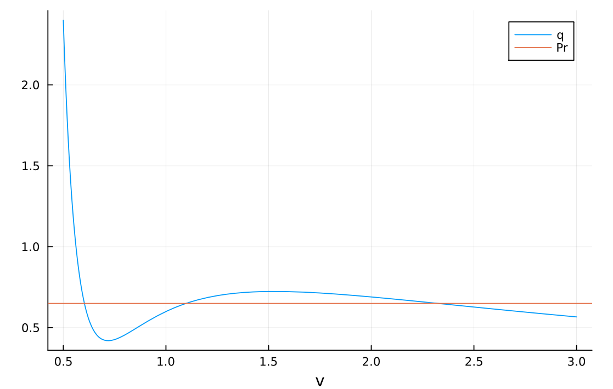
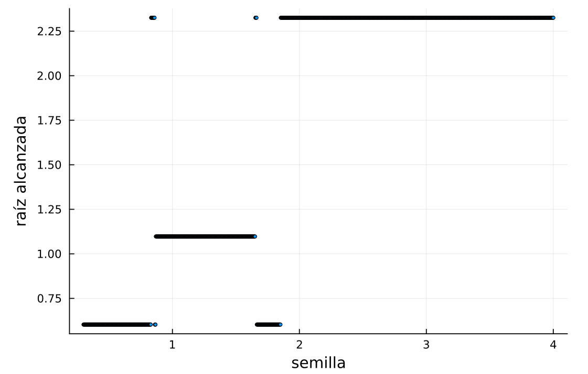
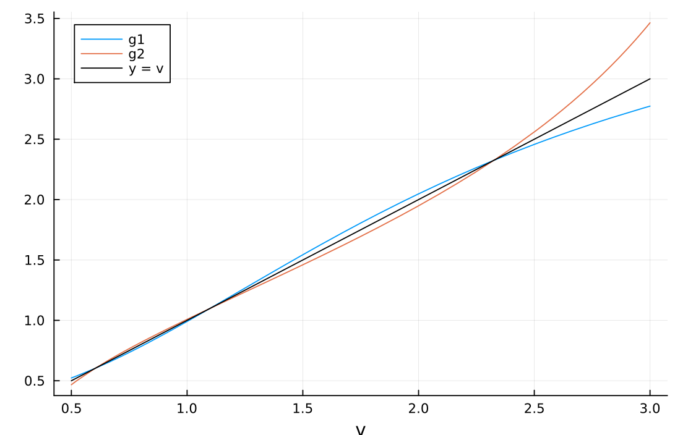

Taller 3
Fluidos supercríticos y la ecuación de van der Waals
Si se conocen la temperatura \(T\) y la presión \(P\) de un gas, ¿qué volumen \(V\) ocupa? Para un gas ideal la respuesta es inmediata: \(V = RT/P\), donde \(R\) es la constante de los gases y \(V\) es el volumen de una cantidad fija de gas (un mol). Para un gas real como el CO₂, el modelo más sencillo es la ecuación de van der Waals,
\[\left(P + \frac{a}{V^2}\right)(V - b) = RT, \tag{1}\]
donde \(a > 0\) mide la atracción entre las moléculas y \(b > 0\) el espacio que ellas mismas ocupan; cada gas tiene sus propios \(a\) y \(b\). Con \(T\) y \(P\) dadas, \(V\) es raíz de un polinomio cúbico. Con Cardano tendríamos una fórmula (inmanejable), pero aquí encontraremos \(V\) con los métodos del curso.
Una cúbica puede tener hasta tres raíces reales (siempre al menos una), y aquí eso tiene sentido físico. A temperatura baja, una misma temperatura y presión pueden corresponder a dos estados del CO₂: líquido (volumen pequeño) y vapor (volumen grande). Es lo que pasa en una olla de agua hirviendo, donde conviven el agua y el vapor. La tercera raíz, entre esas dos, no se observa: en ella, al comprimir el gas su presión bajaría en vez de subir, y cualquier perturbación lo lleva al líquido o al vapor.
Al subir la temperatura, el líquido y el vapor se parecen cada vez más, hasta que en una temperatura llamada crítica, \(T_c\), se vuelven indistinguibles. Por encima de \(T_c\) no hay ebullición: al comprimir el CO₂ su densidad aumenta de forma continua sin que aparezca nunca un líquido separado, y se dice que es un fluido supercrítico. En la ecuación, el punto crítico es el único donde las tres raíces se juntan en una raíz triple. La temperatura, la presión y el volumen en ese punto se llaman \(T_c\), \(P_c\) y \(V_c\); para van der Waals, \(T_c = 8a/(27Rb)\), \(P_c = a/(27b^2)\) y \(V_c = 3b\).
Conviene medir todo en unidades del punto crítico. La temperatura, la presión y el volumen reducidos son \(T_r = T/T_c\), \(P_r = P/P_c\) y \(v = V/V_c\); por ejemplo, \(T_r = 0.9\) es el 90 % de la temperatura crítica. En esas variables desaparecen \(a\), \(b\) y \(R\), y la ecuación es la misma para cualquier gas:
\[\left(P_r + \frac{3}{v^2}\right)(3v - 1) = 8T_r. \tag{2}\]
En papel, demuestren que a partir de la ecuación (2) se obtiene la cúbica
\[p(v) = 3P_r v^3 - (P_r + 8T_r)v^2 + 9v - 3 = 0. \tag{3}\]
Casi todo el taller estudia el CO₂ con \(T_r = 0.9\) y \(P_r = 0.65\), es decir, a 90 % de su temperatura crítica y a 65 % de su presión crítica, un poco por debajo del punto crítico. Confirmen, usando Julia como calculadora, que para ese caso la cúbica es
\[p(v) = 1.95v^3 - 7.85v^2 + 9v - 3. \tag{4}\]
Esta ecuación (4) tiene tres raíces: el líquido, el estado intermedio (inobservable e inestable) y el vapor. Calculen a mano su derivada \(p'\). Usen newton del libro, con \(p\) y \(p'\), y la función punto_fijo del taller de estudio.
Al multiplicar (2) por \(v^2\) queda \((P_r v^2 + 3)(3v - 1) = 8T_r v^2\), es decir \(3P_r v^3 - P_r v^2 + 9v - 3 - 8T_r v^2 = 0\), que es (3). Con \(T_r = 0.9\) y \(P_r = 0.65\): \(3\cdot 0.65 = 1.95\) y \(0.65 + 8\cdot 0.9 = 7.85\), lo que da (4).
La derivada, a mano, es \(p'(v) = 9P_r v^2 - 2(P_r + 8T_r)v + 9\), que para este caso vale \(p'(v) = 5.85v^2 - 15.7v + 9\).
Comprueben primero a mano que con \(T_r = P_r = 1\) la cúbica (3) se reduce a \(3(v - 1)^3\): una raíz triple en \(v = 1\), el punto crítico. Luego despejen a mano \(P_r\) de la ecuación (2) en función de \(v\) y \(T_r\); llamen \(q(v)\) al resultado, que es la presión que la ecuación asigna al volumen \(v\). Entreguen en papel la verificación y el despeje. Ya en la computadora, grafiquen la \(p\) del CO₂ con \(T_r = 0.9\) y \(P_r = 0.65\), es decir la ecuación (4), en \([0.5, 3]\) junto con el eje horizontal, y lean a ojo en qué intervalos de ancho 0.1 están sus tres raíces. Grafiquen también \(q\) con \(T_r = 0.9\) junto con la recta horizontal \(P_r = 0.65\): las tres raíces son los cruces. Identifiquen cuál corresponde al líquido (volumen pequeño, mayor densidad) y cuál al vapor. Del estado intermedio no basta con decir que está en el medio: un fluido estable se resiste a ser comprimido, porque si se reduce un poco su volumen la presión sube y lo empuja de vuelta. Con eso expliquen por qué ese cruce corresponde a un volumen inestable que no puede observarse. (10 pts)
p(v) = 1.95v^3 - 7.85v^2 + 9v - 3
dp(v) = 5.85v^2 - 15.7v + 9
q(v, Tr) = 8Tr/(3v - 1) - 3/v^2
plot(p, 0.5, 3; label="p", xlabel="v")
hline!([0]; color=:black, label="")
plot(v -> q(v, 0.9), 0.5, 3; label="q", xlabel="v")
hline!([0.65]; label="Pr")
Con \(T_r = P_r = 1\), \(p(v) = 3v^3 - 9v^2 + 9v - 3 = 3(v - 1)^3\). Del despeje, \(P_r + 3/v^2 = 8T_r/(3v - 1)\), así que \(q(v) = 8T_r/(3v - 1) - 3/v^2\).
Las tres raíces están en \([0.6, 0.7]\), \([1.0, 1.1]\) y \([2.3, 2.4]\) (cerca de 0.60, 1.10 y 2.33). La menor es el líquido (volumen pequeño, mayor densidad) y la mayor es el vapor.
La curva \(q\) baja hasta un mínimo local cerca de \(v = 0.72\) (presión 0.42), sube hasta un máximo local cerca de \(v = 1.53\) (presión 0.72) y vuelve a bajar. En los cruces cerca de 0.60 y 2.33 la presión baja al aumentar el volumen (\(q'\) vale \(-5.65\) y \(-0.13\)): si el fluido se comprime un poco, la presión sube y lo empuja de vuelta, así que son estables. En el cruce cerca de 1.10 la presión sube al aumentar el volumen (\(q'\) vale \(0.43\)): si el fluido se comprime un poco, su presión queda por debajo de \(P_r\) y la compresión continúa hasta el líquido; si se expande un poco, queda por encima de \(P_r\) y la expansión continúa hasta el vapor. Por eso el estado intermedio no se observa.
Ahora estudien cómo se comporta Newton según la semilla. Corran newton (maxiter \(= 60\), ftol \(=\) xtol \(= 10^{-13}\)) desde 1001 semillas igualmente espaciadas en \([0.3, 4]\), guarden el último iterado de cada una y grafiquen la raíz alcanzada contra la semilla. Lean en su gráfica qué intervalos de semillas llevan a cada raíz y señalen los resultados que no esperarían, es decir, semillas que terminan lejos de la raíz más cercana. (10 pts)
semillas = range(0.3, 4; length=1001)
alcanzada = [last(newton(p, dp, s; maxiter=60, ftol=1e-13, xtol=1e-13)) for s in semillas]
scatter(semillas, alcanzada; ms=2, legend=false,
xlabel="semilla", ylabel="raíz alcanzada")
newton contra la semilla, con 1001 semillas en \([0.3, 4]\).
Aproximadamente: de 0.3 a 0.83 llegan al líquido (0.603); de 0.87 a 1.65 a la raíz intermedia (1.097); y desde 1.85 en adelante al vapor (2.325). Lo inesperado está en dos franjas: las semillas entre 1.67 y 1.85 terminan en el líquido, a más de 1.0 de distancia, aunque están más cerca del vapor; y las semillas entre 0.83 y 0.86 saltan hasta el vapor. Hay además ventanas diminutas alternadas cerca de 0.86 y 1.66. Los cambios ocurren cerca de \(v = 0.83\) y \(v = 1.85\), que son los ceros de \(p'\): la tangente es casi horizontal y el primer paso de Newton lanza el iterado muy lejos.
Pasemos al punto fijo. La ecuación (2) se puede despejar de dos maneras para obtener una función \(g\) cuyos puntos fijos son las raíces de \(p\). Deduzcan las dos en papel: para \(g_1\), dividan la ecuación (2) entre \(P_r + 3/v^2\) y despejen \(v\) del factor \(3v - 1\); para \(g_2\), dividan la ecuación (2) entre \(3v - 1\), pasen \(P_r\) al otro lado y despejen \(v\) de \(3/v^2\). Entreguen los despejes en papel. Grafiquen \(g_1\) y \(g_2\) junto con la identidad \(y = v\) en \([0.5, 3]\): los cruces con la identidad son los puntos fijos y deben coincidir con las tres raíces de \(p\) (si no coinciden, revisen el despeje). Antes de iterar, lean en la gráfica qué raíces atrapa cada despeje, recordando que un punto fijo atrae cuando \(|g'| < 1\) en él. Programen una derivada numérica centrada, derivada(h, x) \(= (h(x + \delta) - h(x - \delta))/(2\delta)\) con \(\delta = 10^{-6}\), y calculen \(g_1'\) y \(g_2'\) en las tres raíces para confirmarlo. Compruébenlo con punto_fijo (ftol \(= 10^{-8}\), xtol \(= 0\)): \(g_1\) desde las semillas 0.5 y 2, y \(g_2\) desde la semilla 1.2. Reporten redactando en el cuadernillo las iteraciones y raíz alcanzada. (10 pts)
Para \(g_1\), al dividir (2) entre \(P_r + 3/v^2\) queda \(3v - 1 = 8T_r/(P_r + 3/v^2)\), y despejando \(v\):
\[g_1(v) = \frac{1}{3}\left(1 + \frac{8T_r}{P_r + 3/v^2}\right).\]
Para \(g_2\), al dividir (2) entre \(3v - 1\) queda \(P_r + 3/v^2 = 8T_r/(3v - 1)\), luego \(3/v^2 = 8T_r/(3v - 1) - P_r\) y
\[g_2(v) = \sqrt{\frac{3}{\dfrac{8T_r}{3v - 1} - P_r}}.\]
Tr, Pr = 0.9, 0.65
g1(v) = (1 + 8Tr/(Pr + 3/v^2)) / 3
g2(v) = sqrt(3 / (8Tr/(3v - 1) - Pr))
plot(g1, 0.5, 3; label="g1", xlabel="v")
plot!(g2, 0.5, 3; label="g2")
plot!(identity, 0.5, 3; label="y = v", color=:black)
derivada(h, x; δ=1e-6) = (h(x + δ) - h(x - δ)) / (2δ)
rs = [last(newton(p, dp, s; ftol=1e-14, xtol=0)) for s in (0.5, 1.0, 2.0)]
[derivada(g1, r) for r in rs], [derivada(g2, r) for r in rs]
punto_fijo(p, g1, 0.5; maxiter=3000, ftol=1e-8, xtol=0)
punto_fijo(p, g1, 2.0; maxiter=3000, ftol=1e-8, xtol=0)
punto_fijo(p, g2, 1.2; maxiter=3000, ftol=1e-8, xtol=0)
(a) Los cruces de \(g_1\) y \(g_2\) con la identidad están en 0.603, 1.097 y 2.325, las raíces de \(p\).
(b) Para \(g_1\): 0.829 en el líquido, 1.104 en la intermedia y 0.789 en el vapor. Para \(g_2\): 1.206; 0.906 y 1.268. Un punto fijo atrae cuando \(|g'| < 1\): \(g_1\) atrapa el líquido y el vapor y repele la intermedia; \(g_2\) atrapa solo la intermedia.
(c) \(g_1\) desde 0.5: 88 iteraciones y 0.6029. \(g_1\) desde 2: 81 iteraciones y 2.3253. \(g_2\) desde 1.2: 164 iteraciones y 1.0974. Para hallar los tres volúmenes con punto fijo hacen falta los dos despejes.
Con los iterados de \(g_1\) desde 0.5 (que llegan al líquido) calculen el orden de convergencia del punto fijo. Tomen como \(r\) la raíz que da newton con ftol \(= 10^{-14}\), definan \(\epsilon_k = |x_k - r|\) y calculen los cocientes \(\epsilon_{k+1}/\epsilon_k\); mírenlos hacia el final de la lista y compárenlos con \(|g_1'(r)|\). ¿Qué orden de convergencia tiene el punto fijo? Después programen kappa(dp, r) \(= 1/|p'(r)|\) y calculen \(\kappa\) en las tres raíces: ¿cuál es la más sensible a una perturbación de \(p\)? Por último, en la raíz del líquido, paren punto fijo (\(g_1\)) y Newton solo por residuo (ftol \(= 10^{-8}\), xtol \(= 0\)) y calculen al final el cociente \(\text{error}/(\kappa\cdot\text{residuo})\). ¿Qué dice ese número sobre el residuo como criterio de parada en este problema? (10 pts)
r = last(newton(p, dp, 0.5; ftol=1e-14, xtol=0))
xf = punto_fijo(p, g1, 0.5; maxiter=3000, ftol=1e-8, xtol=0)
ε = abs.(xf .- r)
ε[2:end] ./ ε[1:end-1] # mirar los últimos cocientes(a) Los últimos cocientes valen 0.8289, igual que \(|g_1'(r)| = 0.8289\): el error se multiplica por una constante en cada paso, es decir, convergencia lineal (orden 1).
kappa(dp, r) = 1 / abs(dp(r))
kappa.(dp, rs) # rs: las tres raíces de la parte anterior(b) \(\kappa \approx 0.602\) en el líquido, 0.844 en la intermedia y 0.243 en el vapor. La intermedia es la más sensible: tiene la derivada más pequeña en valor absoluto, \(|p'| \approx 1.18\).
κ = kappa(dp, r)
razon(x) = abs(x[end] - r) / (κ * abs(p(x[end])))
xn = newton(p, dp, 0.5; ftol=1e-8, xtol=0)
razon.((xf, xn))(c) El cociente da aproximadamente 1 en los dos métodos: el error final es \(\kappa\) veces el residuo final. Como aquí \(\kappa \approx 0.6\) es menor que 1, el error siempre es menor que el residuo, y pedir ftol \(= 10^{-8}\) ya garantiza error menor que \(10^{-8}\) (es lo contrario de Kepler, donde \(\kappa \approx 16.6\)). Los errores finales son unos \(5\times10^{-9}\) en punto fijo (88 pasos) y \(10^{-11}\) en Newton (4 pasos): el método superlineal termina muy por debajo de la tolerancia porque el último paso corrige de golpe.
Para cerrar, programen raices(Tr, Pr, semillas; err) con newton: escriban \(p\) y su derivada \(p'\), calculada a mano, para ese par \((T_r, P_r)\) y, desde cada semilla del vector semillas, corran newton con ftol \(= 10^{-6}\) para estimar la raíz, calculen \(\kappa\) y vuelvan a correr con ftol \(= \text{err}/\kappa\). Devuelvan la lista de pares (raíz, \(\kappa\)). Pruébenla con \((T_r, P_r) = (0.85, 0.5)\), \((0.9, 0.65)\) y \((1.1, 1.0)\); para escoger las semillas grafiquen antes la \(p\) de cada caso en \([0.5, 4]\). Digan cuántas raíces encuentra la función en cada caso.
Para entender por qué, grafiquen en una misma figura la función \(q(v)\) de la primera parte en \([0.5, 3]\), para \(T_r = 0.85\), \(0.9\), \(0.95\), \(1\), \(1.05\) y \(1.1\) (con ylims=(0, 1.5)). Una presión fija es una recta horizontal en esa figura: ¿cuántas veces puede cortar cada curva? ¿A partir de qué temperatura reducida deja de haber tres volúmenes, y qué estado del CO₂ representa entonces el único volumen? (10 pts)
function raices(Tr, Pr, semillas; err=1e-10)
p(v) = 3Pr*v^3 - (Pr + 8Tr)*v^2 + 9v - 3
dp(v) = 9Pr*v^2 - 2(Pr + 8Tr)*v + 9
res = Tuple{Float64,Float64}[]
for x1 in semillas
r0 = last(newton(p, dp, x1; ftol=1e-6, xtol=0))
κ = 1 / abs(dp(r0))
r = last(newton(p, dp, x1; ftol=err/κ, xtol=0))
push!(res, (r, κ))
end
return res
end
raices(0.85, 0.5, (0.6, 1.1, 3.0)),
raices(0.9, 0.65, (0.6, 1.1, 2.3)),
raices(1.1, 1.0, (2.0,))
fig = plot(xlabel="v", ylabel="q", ylims=(0, 1.5))
for Tr in (0.85, 0.9, 0.95, 1.0, 1.05, 1.1)
plot!(fig, v -> q(v, Tr), 0.5, 3; label="Tr = $Tr")
end
figPara \((0.85, 0.5)\): raíces 0.5538; 1.1373 y 3.1756, con \(\kappa \approx 0.436\); 0.560 y 0.125. Para \((0.9, 0.65)\): 0.6029; 1.0974 y 2.3253, con \(\kappa \approx 0.602\); 0.844 y 0.242. Para \((1.1, 1.0)\): una sola raíz, 2.0329, con \(\kappa \approx 0.157\). En cada caso Newton converge a la raíz que está junto a su semilla.
En la figura de \(q\), las curvas con \(T_r < 1\) tienen un tramo creciente (forma de S): para \(T_r = 0.85\) entre \(v \approx 0.67\) y \(1.72\), para \(T_r = 0.9\) entre \(0.72\) y \(1.53\), y para \(T_r = 0.95\) entre \(0.79\) y \(1.33\). Una horizontal a una altura comprendida en ese tramo corta la curva tres veces: líquido, estado intermedio y vapor. El estado intermedio está justo en el tramo creciente, donde comprimir el gas bajaría su presión. Desde \(T_r = 1\) las curvas son decrecientes y una horizontal las corta una sola vez: por encima de la temperatura crítica el único volumen es el del fluido supercrítico, y por eso \((1.1, 1.0)\) da una sola raíz.
La frontera exacta se puede demostrar: la derivada de \(q\) es \(6/v^3 - 24T_r/(3v - 1)^2\), negativa exactamente cuando \(T_r > (3v - 1)^2/(4v^3)\); el lado derecho tiene su máximo en \(v = 1\), donde vale 1. Luego \(q\) es decreciente para todo \(v\) si y solo si \(T_r \ge 1\).